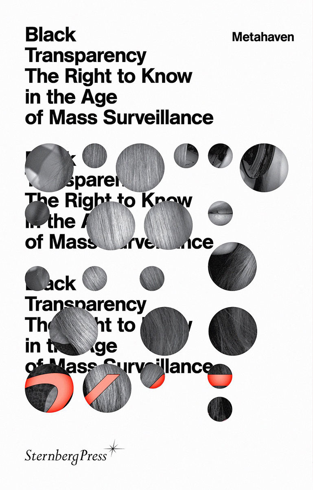

My initial inspiration for this project was the book ‘Black Transparency The Right To Know in the Age of Mass Surveillance’, by Metahaven, a small Dutch graphic design studio.
The book has a lot of strange design decisions that we were actually taught in class that were wrong. For example, the book has strange indentations, and higher case titles. The typeface is way too big, and it is a very bad typeface for the paper and kind of printing used as the ink bleeds out of the letters, making them seem fat and uncomfortably large. It also makes the baselines of the letters merge without reason, sometimes even creating confusion by merging different letters. Also, some paragraphs have a medieval capital starting the paragraph. It doesn't directly affect the reading but it is definitely uncommon. Also the only thing among all these escapes from the norm that actually bothers me are the indications of the paragraph in the corner of the pages. They are way too small to even be readable to a person with normal eyesight. I agree it does not need the same hierarchy as other information in the book but it needs to be reasonably readable.


Other book that definitely inspired me was 'Statement and Counter-Statement: Notes on Experimental Jetset'.

Here what really influenced my decisions were the spacings between the elements, hierarchies and grid. I tried to achieve similar clarity but with a more classical look, to go more to the encounter of the tipical visuals associated with britain.


This test was just a representation of the idea. It received quite good feeback because the sectioning of the cover related to prison or division which is completelly relatable with the theme of the book. It only needed refining and development.

The inside on the other hand was very very successful. It received great feedback and was only advised to adjust small details like font size in some places and some letter spacings. The white margins and spaces were original and enabled the text to breathe a lot without exagerating on the space.


(From left to right) The first cover was the one presented at the crit. It received good feedback but the typeface of the spine and back was not coherent with the front. Also, some adjustments with alignments were necessary. On the second cover most of the errors were corrected, but the brightness of the penguin logo bothered me. And for the final tutorial I decided to change it to the last version.